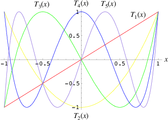

SIGNAL PROCESSING in SuperCollider
1. A Tour of available Unit Generators.
SuperCollider has over 250 unit generators.
If you count the unary and binary operators, there are over 300.
This tour covers many, but not all of them.
categories of unit generators:
sources: periodic, aperiodic
filters
distortion
panning
delays and buffer ugens
control: envelopes, triggers, counters, gates, lags, decays
spectral
2. Techniques
broadening a sound:
decorrelation, beat frequencies, delays.
series and parallel structures.
(
s = Server.internal;
Server.default = s;
s.boot;
)
Periodic Sources: Oscillators.
LF - "Low Frequency" Unit Generators.
LFPar, LFCub, LFTri, Impulse, LFSaw, LFPulse, VarSaw, SyncSaw
geometric waveforms, not band limited.
will cause aliasing at higher frequencies.
LFPar, LFCub, LFTri, LFSaw, Impulse
arguments: frequency, phase, mul, add
// parabolic approximation of sine
{ LFPar.ar(LFPar.kr(LFPar.kr(0.2,0,8,10),0, 400,800),0,0.1) }.scope(1, zoom: 4);
{ LFPar.ar(LFPar.kr(0.2, 0, 400,800),0,0.1) }.scope(1, zoom: 4);
{ LFPar.ar(800,0,0.1) }.scope(1, zoom: 4);
// since it is not band limited, there are aliasing artifacts
{ LFPar.ar(XLine.kr(100,15000,6),0,0.1) }.scope(1, zoom: 4);
// cubic approximation of sine
{ LFCub.ar(LFCub.kr(LFCub.kr(0.2,0,8,10),0, 400,800),0,0.1) }.scope(1, zoom: 4);
{ LFCub.ar(LFCub.kr(0.2, 0, 400,800),0,0.1) }.scope(1, zoom: 4);
{ LFCub.ar(800,0,0.1) }.scope(1, zoom: 4);
{ LFCub.ar(XLine.kr(100,15000,6),0,0.1) }.scope(1, zoom: 4);
{ LFTri.ar(LFTri.kr(LFTri.kr(0.2,0,8,10),0, 400,800),0,0.1) }.scope(1, zoom: 4);
{ LFTri.ar(LFTri.kr(0.2, 0, 400,800),0,0.1) }.scope(1, zoom: 4);
{ LFTri.ar(800,0,0.1) }.scope(1, zoom: 4);
{ LFTri.ar(XLine.kr(100,15000,6),0,0.1) }.scope(1, zoom: 4);
{ LFSaw.ar(LFSaw.kr(LFSaw.kr(0.2,0,8,10),0, 400,800),0,0.1) }.scope(1, zoom: 4);
{ LFSaw.ar(LFSaw.kr(0.2, 0, 400,800),0,0.1) }.scope(1, zoom: 4);
{ LFSaw.ar(100,0,0.1) }.scope(1, zoom: 4);
{ LFSaw.ar(XLine.kr(100,15000,6),0,0.1) }.scope(1, zoom: 4);
{ Impulse.ar(LFTri.kr(LFTri.kr(0.2,0,8,10),0, 400,800),0,0.1) }.scope(1, zoom: 4);
{ Impulse.ar(LFTri.kr(0.2, 0, 400,800),0,0.1) }.scope(1, zoom: 4);
{ Impulse.ar(100,0,0.1) }.scope(1, zoom: 4);
{ Impulse.ar(XLine.kr(100,15000,6),0,0.1) }.scope(1, zoom: 4);
LFPulse, VarSaw
arguments: frequency, phase, width, mul, add
{ LFPulse.ar(LFPulse.kr(LFPulse.kr(0.2,0,0.5,8,10),0,0.5, 400,800),0,0.5,0.1) }.scope(1, zoom: 4);
{ LFPulse.ar(LFPulse.kr(3, 0, 0.3, 200, 200), 0, 0.2, 0.1) }.scope(1, zoom: 4);
{ LFPulse.ar(XLine.kr(100,15000,6),0,0.5,0.1) }.scope(1, zoom: 4);
// pulse width modulation
{ LFPulse.ar(100,0,MouseY.kr(0,1),0.1) }.scope(1, zoom: 4);
{ LFPulse.ar(100,0,LFTri.kr(0.2,0,0.5,0.5),0.1) }.scope(1, zoom: 4);
{ VarSaw.ar(VarSaw.kr(VarSaw.kr(0.2,0,0.2,8,10),0,0.2, 400,800),0,0.2,0.1) }.scope(1, zoom: 4);
{ VarSaw.ar(VarSaw.kr(0.2, 0, 0.2, 400,800),0,0.2,0.1) }.scope(1, zoom: 4);
{ VarSaw.ar(XLine.kr(100,15000,6),0,0.2,0.1) }.scope(1, zoom: 4);
// pulse width modulation
{ VarSaw.ar(100,0,MouseY.kr(0,1),0.1) }.scope(1, zoom: 4);
{ VarSaw.ar(100,0,LFTri.kr(0.2,0,0.5,0.5),0.1) }.scope(1, zoom: 4);
SyncSaw
arguments: syncFreq, sawFreq, mul, add
{ SyncSaw.ar(100, MouseX.kr(100, 1000), 0.1) }.scope(1, zoom: 4);
{ SyncSaw.ar(100, Line.kr(100, 800, 12), 0.1) }.scope(1, zoom: 4);
Band Limited Oscillators
SinOsc, FSinOsc, Blip, Saw, Pulse
will not alias.
SinOsc, FSinOsc
arguments: frequency, phase, mul, add
{ SinOsc.ar(SinOsc.kr(SinOsc.kr(0.2,0,8,10),0, 400,800),0,0.1) }.scope(1, zoom: 4);
{ SinOsc.ar(SinOsc.kr(0.2, 0, 400,800),0,0.1) }.scope(1, zoom: 4);
{ SinOsc.ar(800,0,0.1) }.scope(1, zoom: 4);
{ SinOsc.ar(XLine.kr(100,15000,6),0,0.1) }.scope(1, zoom: 4);
{ FSinOsc.ar(800,0,0.1) }.scope(1, zoom: 4);
// FSinOsc should not be frequency modulated.
// Since it is based on a filter at the edge of stability, it will blow up:
{ FSinOsc.ar(FSinOsc.kr(FSinOsc.kr(0.2,0,8,10),0, 400,800),0,0.1) }.scope(1, zoom: 4);
Blip
arguments: frequency, numHarmonics, mul, add
{ Blip.ar(XLine.kr(20000,200,6),100,0.2) }.scope(1);
{ Blip.ar(XLine.kr(100,15000,6),100,0.2) }.scope(1); // no aliasing
// modulate number of harmonics
{ Blip.ar(200,Line.kr(1,100,20),0.2) }.scope(1);
Saw
arguments: frequency, mul, add
{ Saw.ar(XLine.kr(20000,200,6),0.2) }.scope(1);
{ Saw.ar(XLine.kr(100,15000,6),0.2) }.scope(1); // no aliasing
Pulse
arguments: frequency, width, mul, add
{ Pulse.ar(XLine.kr(20000,200,6),0.3,0.2) }.scope(1);
{ Pulse.ar(XLine.kr(100,15000,6),0.3,0.2) }.scope(1); // no aliasing
// modulate pulse width
{ Pulse.ar(200, Line.kr(0.01,0.99,8), 0.2) }.scope(1);
// two band limited square waves thru a resonant low pass filter
{ RLPF.ar(Pulse.ar([100,250],0.5,0.1), XLine.kr(8000,400,5), 0.05) }.scope(1);
Klang - sine oscillator bank
arguments: `[ frequencies, amplitudes, phases ], mul, add
{ Klang.ar(`[ [800, 1000, 1200],[0.3, 0.3, 0.3],[pi,pi,pi]], 1, 0) * 0.4}.scope(1);
{ Klang.ar(`[ {exprand(400, 2000)}.dup(16), nil, nil ], 1, 0) * 0.04 }.scope(1);
Table Oscillators
Osc, COsc, VOsc, VOsc3
Use a buffer allocated on the server.
Osc
arguments: buffer number, frequency, phase, mul, add.
(
b = Buffer.alloc(s, 2048, 1, bufnum: 80);
b.sine1(1.0/(1..6), true, true, true);
)
{ Osc.ar(80, 100, 0, 0.1) }.scope(1, zoom:4);
b.sine1(1.0/(1..12));
b.sine1(1.0/(1..24));
b.sine1(1.0/(1..32));
b.sine1([1.0/(1,3..12), 0].flop.flat.postln);
b.sine1([1.0/(1,3..32).squared, 0].flop.flat.postln);
b.sine1((1.dup(4) ++ 0.dup(8)).scramble.postln);
b.sine1((1.dup(4) ++ 0.dup(8)).scramble.postln);
b.sine1((1.dup(4) ++ 0.dup(8)).scramble.postln);
b.sine1((1.dup(4) ++ 0.dup(8)).scramble.postln);
b.sine1({1.0.rand2.cubed}.dup(8).round(1e-3).postln);
b.sine1({1.0.rand2.cubed}.dup(12).round(1e-3).postln);
b.sine1({1.0.rand2.cubed}.dup(16).round(1e-3).postln);
b.sine1({1.0.rand2.cubed}.dup(24).round(1e-3).postln);
COsc - two oscillators, detuned
arguments: buffer number, frequency, beat frequency, mul, add.
b.sine1(1.0/(1..6), true, true, true);
{ COsc.ar(80, 100, 1, 0.1) }.scope(1, zoom:4);
// change buffer as above.
VOsc - multiple wave table crossfade oscillators
arguments: buffer number, frequency, phase, mul, add.
(
// allocate tables 80 to 87
8.do {|i| s.sendMsg(\b_alloc, 80+i, 1024); };
)
(
// fill tables 80 to 87
8.do({|i|
var n, a;
// generate array of harmonic amplitudes
n = (i+1)**2; // num harmonics for each table: [1,4,9,16,25,36,49,64]
a = {|j| ((n-j)/n).squared }.dup(n);
// fill table
s.listSendMsg([\b_gen, 80+i, \sine1, 7] ++ a);
});
)
{ VOsc.ar(MouseX.kr(80,87), 120, 0, 0.3) }.scope(1, zoom:4);
(
// allocate and fill tables 80 to 87
8.do({|i|
// generate array of harmonic amplitudes
a = {1.0.rand2.cubed }.dup((i+1)*4);
// fill table
s.listSendMsg([\b_gen, 80+i, \sine1, 7] ++ a);
});
)
VOsc3 - three VOscs summed.
arguments: buffer number, freq1, freq2, freq3, beat frequency, mul, add.
// chorusing
{ VOsc3.ar(MouseX.kr(80,87), 120, 121.04, 119.37, 0.2) }.scope(1, zoom:4);
// chords
{ VOsc3.ar(MouseX.kr(80,87), 120, 151.13, 179.42, 0.2) }.scope(1, zoom:4);
Aperiodic Sources: Noise.
LF "Low Frequency" Noise Generators.
LFNoise0, LFNoise1, LFNoise2, LFClipNoise
arguments: frequency, mul, add
{ LFClipNoise.ar(MouseX.kr(200, 10000, 1), 0.125) }.scope(1);
{ LFNoise0.ar(MouseX.kr(200, 10000, 1), 0.25) }.scope(1);
{ LFNoise1.ar(MouseX.kr(200, 10000, 1), 0.25) }.scope(1);
{ LFNoise2.ar(MouseX.kr(200, 10000, 1), 0.25) }.scope(1);
// used as controls
{ LFPar.ar(LFClipNoise.kr(MouseX.kr(0.5, 64, 1), 200, 400), 0, 0.2) }.scope(1, zoom:8);
{ LFPar.ar(LFNoise0.kr(MouseX.kr(0.5, 64, 1), 200, 400), 0, 0.2) }.scope(1, zoom:8);
{ LFPar.ar(LFNoise1.kr(MouseX.kr(0.5, 64, 1), 200, 400), 0, 0.2) }.scope(1, zoom:8);
{ LFPar.ar(LFNoise2.kr(MouseX.kr(0.5, 64, 1), 200, 400), 0, 0.2) }.scope(1, zoom:8);
Broad Spectrum Noise Generators
ClipNoise, WhiteNoise, PinkNoise, BrownNoise, GrayNoise
arguments: mul, add
{ ClipNoise.ar(0.2) }.scope(1);
{ WhiteNoise.ar(0.2) }.scope(1);
{ PinkNoise.ar(0.4) }.scope(1);
{ BrownNoise.ar(0.2) }.scope(1);
{ GrayNoise.ar(0.2) }.scope(1);
Impulse Noise Generators
Dust, Dust2
arguments: density, mul, add
{ Dust.ar(MouseX.kr(1,10000,1), 0.4) }.scope(1, zoom:4);
{ Dust2.ar(MouseX.kr(1,10000,1), 0.4) }.scope(1, zoom:4);
Chaotic Noise Generators
Crackle
arguments: chaosParam, mul, add
{ Crackle.ar(MouseX.kr(1,2), 0.5) }.scope(1);
Filters
Low Pass, High Pass
LPF, HPF - 12 dB / octave
arguments: in, freq, mul, add
{ LPF.ar(WhiteNoise.ar, MouseX.kr(1e2,2e4,1), 0.2) }.scope(1);
{ HPF.ar(WhiteNoise.ar, MouseX.kr(1e2,2e4,1), 0.2) }.scope(1);
{ LPF.ar(Saw.ar(100), MouseX.kr(1e2,2e4,1), 0.2) }.scope(1);
{ HPF.ar(Saw.ar(100), MouseX.kr(1e2,2e4,1), 0.2) }.scope(1);
Band Pass, Band Cut
BPF, BRF - 12 dB / octave
arguments: in, freq, rq, mul, add
rq is the reciprocal of the Q of the filter,
or in other words: the bandwidth in Hertz = rq * freq.
{ BPF.ar(WhiteNoise.ar, MouseX.kr(1e2,2e4,1), 0.4, 0.4) }.scope(1);
{ BRF.ar(WhiteNoise.ar, MouseX.kr(1e2,2e4,1), 0.4, 0.2) }.scope(1);
{ BPF.ar(Saw.ar(100), MouseX.kr(1e2,2e4,1), 0.4, 0.4) }.scope(1);
{ BRF.ar(Saw.ar(100), MouseX.kr(1e2,2e4,1), 0.4, 0.2) }.scope(1);
// modulating the bandwidth
{ BPF.ar(WhiteNoise.ar, 3000, MouseX.kr(0.01,0.7,1), 0.4) }.scope(1);
Resonant Low Pass, High Pass, Band Pass
RLPF, RHPF - 12 dB / octave
arguments: in, freq, rq, mul, add
{ RLPF.ar(WhiteNoise.ar, MouseX.kr(1e2,2e4,1), 0.2, 0.2) }.scope(1);
{ RHPF.ar(WhiteNoise.ar, MouseX.kr(1e2,2e4,1), 0.2, 0.2) }.scope(1);
{ RLPF.ar(Saw.ar(100), MouseX.kr(1e2,2e4,1), 0.2, 0.2) }.scope(1);
{ RHPF.ar(Saw.ar(100), MouseX.kr(1e2,2e4,1), 0.2, 0.2) }.scope(1);
Resonz - resonant band pass filter with uniform amplitude
arguments: in, freq, rq, mul, add
// modulate frequency
{ Resonz.ar(WhiteNoise.ar(0.5), XLine.kr(1000,8000,10), 0.05) }.scope(1);
// modulate bandwidth
{ Resonz.ar(WhiteNoise.ar(0.5), 2000, XLine.kr(1, 0.001, 8)) }.scope(1);
// modulate bandwidth opposite direction
{ Resonz.ar(WhiteNoise.ar(0.5), 2000, XLine.kr(0.001, 1, 8)) }.scope(1);
Ringz - ringing filter.
Internally it is the same as Resonz but the bandwidth is expressed as a ring time.
arguments: in, frequency, ring time, mul, add
{ Ringz.ar(Dust.ar(3, 0.3), 2000, 2) }.scope(1, zoom:4);
{ Ringz.ar(WhiteNoise.ar(0.005), 2000, 0.5) }.scope(1);
// modulate frequency
{ Ringz.ar(WhiteNoise.ar(0.005), XLine.kr(100,3000,10), 0.5) }.scope(1, zoom:4);
{ Ringz.ar(Impulse.ar(6, 0, 0.3), XLine.kr(100,3000,10), 0.5) }.scope(1, zoom:4);
// modulate ring time
{ Ringz.ar(Impulse.ar(6, 0, 0.3), 2000, XLine.kr(0.04, 4, 8)) }.scope(1, zoom:4);
Simpler Filters
6 dB / octave
{ OnePole.ar(WhiteNoise.ar(0.5), MouseX.kr(-0.99, 0.99)) }.scope(1);
{ OneZero.ar(WhiteNoise.ar(0.5), MouseX.kr(-0.49, 0.49)) }.scope(1);
NonLinear Filters
Median, Slew
// a signal with impulse noise.
{ Saw.ar(500, 0.1) + Dust2.ar(100, 0.9) }.scope(1);
// after applying median filter
{ Median.ar(3, Saw.ar(500, 0.1) + Dust2.ar(100, 0.9)) }.scope(1);
// a signal with impulse noise.
{ Saw.ar(500, 0.1) + Dust2.ar(100, 0.9) }.scope(1);
// after applying slew rate limiter
{ Slew.ar(Saw.ar(500, 0.1) + Dust2.ar(100, 0.9),1000,1000) }.scope(1);
Formant Filter
Formlet - A filter whose impulse response is similar to a FOF grain.
{ Formlet.ar(Impulse.ar(MouseX.kr(2,300,1), 0, 0.4), 800, 0.01, 0.1) }.scope(1, zoom:4);
Klank - resonant filter bank
arguments: `[ frequencies, amplitudes, ring times ], mul, add
{ Klank.ar(`[[200, 671, 1153, 1723], nil, [1, 1, 1, 1]], Impulse.ar(2, 0, 0.1)) }.play;
{ Klank.ar(`[[200, 671, 1153, 1723], nil, [1, 1, 1, 1]], Dust.ar(8, 0.1)) }.play;
{ Klank.ar(`[[200, 671, 1153, 1723], nil, [1, 1, 1, 1]], PinkNoise.ar(0.007)) }.play;
{ Klank.ar(`[ {exprand(200, 4000)}.dup(12), nil, nil ], PinkNoise.ar(0.007)) }.scope(1);
{ Klank.ar(`[ (1..13)*200, 1/(1..13), nil ], PinkNoise.ar(0.01)) }.scope(1);
{ Klank.ar(`[ (1,3..13)*200, 1/(1,3..13), nil ], PinkNoise.ar(0.01)) }.scope(1);
Distortion
abs, max, squared, cubed
{ SinOsc.ar(300, 0, 0.2) }.scope(1);
{ SinOsc.ar(300, 0, 0.2).abs }.scope(1);
{ SinOsc.ar(300, 0, 0.2).max(0) }.scope(1);
{ SinOsc.ar(300, 0).squared * 0.2 }.scope(1);
{ SinOsc.ar(300, 0).cubed * 0.2 }.scope(1);
distort, softclip, clip2, fold2, wrap2,
{ SinOsc.ar(300, 0, MouseX.kr(0.1,80,1)).distort * 0.2 }.scope(1);
{ SinOsc.ar(300, 0, MouseX.kr(0.1,80,1)).softclip * 0.2 }.scope(1);
{ SinOsc.ar(300, 0, MouseX.kr(0.1,80,1)).clip2(1) * 0.2 }.scope(1);
{ SinOsc.ar(300, 0, MouseX.kr(0.1,80,1)).fold2(1) * 0.2 }.scope(1);
{ SinOsc.ar(300, 0, MouseX.kr(0.1,80,1)).wrap2(1) * 0.2 }.scope(1);
{ SinOsc.ar(300, 0, MouseX.kr(0.1,80,1)).wrap2(1) * 0.2 }.scope(1);
scaleneg
{ SinOsc.ar(200, 0, 0.2).scaleneg(MouseX.kr(-1,1)) }.scope(1);
waveshaping by phase modulating a 0 Hz sine oscillator
(currently there is a limit of 8pi)
(
{
var in;
in = SinOsc.ar(300, 0, MouseX.kr(0.1,8pi,1));
SinOsc.ar(0, in, 0.2); // 0 Hz sine oscillator
}.scope(1);
)
Shaper
input is used to look up a value in a table.
Chebyshev polynomials are typically used to fill the table.

s.sendMsg(\b_alloc, 80, 1024); // allocate table
// fill with chebyshevs
s.listSendMsg([\b_gen, 80, \cheby, 7] ++ {1.0.rand2.squared}.dup(6));
{ Shaper.ar(80, SinOsc.ar(600, 0, MouseX.kr(0,1))) * 0.3; }.scope(1);
s.listSendMsg([\b_gen, 80, \cheby, 7] ++ {1.0.rand2.squared}.dup(6));
s.listSendMsg([\b_gen, 80, \cheby, 7] ++ {1.0.rand2.squared}.dup(6));
Panning
(
s = Server.internal;
Server.default = s;
s.quit;
s.options.numOutputBusChannels = 8;
s.options.numInputBusChannels = 8;
s.boot;
)
Pan2 - equal power stereo pan a mono source
arguments: in, pan position, level
pan controls typically range from -1 to +1
{ Pan2.ar(BrownNoise.ar, MouseX.kr(-1,1), 0.3) }.scope(2);
{ Pan2.ar(BrownNoise.ar, SinOsc.kr(0.2), 0.3) }.scope(2);
LinPan2 - linear pan a mono source (not equal power)
arguments: in, pan position, level
{ LinPan2.ar(BrownNoise.ar, MouseX.kr(-1,1), 0.3) }.scope(2);
{ LinPan2.ar(BrownNoise.ar, SinOsc.kr(0.2), 0.3) }.scope(2);
Balance2 - balance a stereo source
arguments: left in, right in, pan position, level
{ Balance2.ar(BrownNoise.ar, BrownNoise.ar, MouseX.kr(-1,1), 0.3) }.scope(2);
Pan4 - equal power quad panner
{ Pan4.ar(BrownNoise.ar, MouseX.kr(-1,1), MouseY.kr(1,-1), 0.3) }.scope(4);
PanAz - azimuth panner to any number of channels
arguments: num channels, in, pan position, level, width
{ PanAz.ar(5, BrownNoise.ar, MouseX.kr(-1,1), 0.3, 2) }.scope(5);
// change width to 3
{ PanAz.ar(5, BrownNoise.ar, MouseX.kr(-1,1), 0.3, 3) }.scope(5);
XFade2 - equal power cross fade between two inputs
arguments: in1, in2, crossfade, level
{ XFade2.ar(BrownNoise.ar, SinOsc.ar(500), MouseX.kr(-1,1), 0.3) }.scope(1);
PanB2 and DecodeB2 - 2D ambisonics panner and decoder
(
{
var w, x, y, p, lf, rf, rr, lr;
p = BrownNoise.ar; // source
// B-format encode
#w, x, y = PanB2.ar(p, MouseX.kr(-1,1), 0.3);
// B-format decode to quad. outputs in clockwise order
#lf, rf, rr, lr = DecodeB2.ar(4, w, x, y);
[lf, rf, lr, rr] // reorder to my speaker arrangement: Lf Rf Lr Rr
}.scope(4);
)
Rotate2 - rotate a sound field of ambisonic or even stereo sound.
(
{
// rotation of stereo sound via mouse
var x, y;
x = Mix.fill(4, { LFSaw.ar(200 + 2.0.rand2, 0, 0.1) }); // left in
y = WhiteNoise.ar * LFPulse.kr(3,0,0.7,0.2); // right in
#x, y = Rotate2.ar(x, y, MouseX.kr(0,2));
[x,y]
}.scope(2);
)
Delays and Buffer UGens
DelayN, DelayL, DelayC
simple delays
N - no interpolation
L - linear interpolation
C - cubic interpolation
arguments: in, maximum delay time, current delay time, mul, add
(
// Dust randomly triggers Decay to create an exponential
// decay envelope for the WhiteNoise input source
{
z = Decay.ar(Dust.ar(1,0.5), 0.3, WhiteNoise.ar);
DelayN.ar(z, 0.1, 0.1, 1, z); // input is mixed with delay via the add input
}.scope(1, zoom: 4)
)
(
{
z = Decay.ar(Impulse.ar(2,0,0.4), 0.3, WhiteNoise.ar);
DelayL.ar(z, 0.3, MouseX.kr(0,0.3), 1, z); // input is mixed with delay via the add input
}.scope(1, zoom: 4)
)
CombN, CombL, CombC
feedback delays
arguments: in, maximum delay time, current delay time, echo decay time, mul, add
// used as an echo.
{ CombN.ar(Decay.ar(Dust.ar(1,0.5), 0.2, WhiteNoise.ar), 0.2, 0.2, 3) }.scope(1, zoom:4);
// Comb used as a resonator. The resonant fundamental is equal to
// reciprocal of the delay time.
{ CombN.ar(WhiteNoise.ar(0.02), 0.01, XLine.kr(0.0001, 0.01, 20), 0.2) }.scope(1);
{ CombL.ar(WhiteNoise.ar(0.02), 0.01, XLine.kr(0.0001, 0.01, 20), 0.2) }.scope(1);
{ CombC.ar(WhiteNoise.ar(0.02), 0.01, XLine.kr(0.0001, 0.01, 20), 0.2) }.scope(1);
// with negative feedback:
{ CombN.ar(WhiteNoise.ar(0.02), 0.01, XLine.kr(0.0001, 0.01, 20), -0.2) }.scope(1);
{ CombL.ar(WhiteNoise.ar(0.02), 0.01, XLine.kr(0.0001, 0.01, 20), -0.2) }.scope(1);
{ CombC.ar(WhiteNoise.ar(0.02), 0.01, XLine.kr(0.0001, 0.01, 20), -0.2) }.scope(1);
{ CombC.ar(Decay.ar(Dust.ar(1,0.1), 0.2, WhiteNoise.ar), 1/100, 1/100, 3) }.play;
{ CombC.ar(Decay.ar(Dust.ar(1,0.1), 0.2, WhiteNoise.ar), 1/200, 1/200, 3) }.play;
{ CombC.ar(Decay.ar(Dust.ar(1,0.1), 0.2, WhiteNoise.ar), 1/300, 1/300, 3) }.play;
{ CombC.ar(Decay.ar(Dust.ar(1,0.1), 0.2, WhiteNoise.ar), 1/400, 1/400, 3) }.scope(1, zoom:4);
AllpassN, AllpassL, AllpassC
allpass delay
arguments: in, maximum delay time, current delay time, echo decay time, mul, add
(
{
var z;
z = Decay.ar(Dust.ar(1,0.5), 0.1, WhiteNoise.ar);
8.do { z = AllpassL.ar(z, 0.04, 0.04.rand, 2) };
z
}.scope(1);
)
PlayBuf
buffer playback
arguments: numChannels, buffer number, rate, trigger, start pos, loop
// read sound
b = Buffer.read(s, "sounds/a11wlk01.wav");
{ SinOsc.ar(800 + (700 * PlayBuf.ar(1,b.bufnum, BufRateScale.kr(b.bufnum), loop:1)),0,0.3) }.scope(1);
// loop is true
{ PlayBuf.ar(1,b.bufnum, BufRateScale.kr(b.bufnum), loop:1) }.scope(1);
// trigger one shot on each pulse
(
{
var trig;
trig = Impulse.kr(2.0);
PlayBuf.ar(1,b.bufnum,BufRateScale.kr(b.bufnum),trig,0,0);
}.scope(1);
)
// trigger one shot on each pulse
(
{
var trig;
trig = Impulse.kr(XLine.kr(0.1,100,30));
PlayBuf.ar(1,b.bufnum,BufRateScale.kr(b.bufnum),trig,5000,0);
}.scope(1);
)
// mouse control of trigger rate and startpos
(
{
var trig;
trig = Impulse.kr(MouseY.kr(0.5,200,1));
PlayBuf.ar(1,b.bufnum,BufRateScale.kr(b.bufnum),trig,MouseX.kr(0,BufFrames.kr(b.bufnum)),1)
}.scope(1);
)
// accelerating pitch
(
{
var rate;
rate = XLine.kr(0.1,100,60);
PlayBuf.ar(1, b.bufnum, rate, 1.0,0.0, 1.0)
}.scope(1);
)
// sine wave control of playback rate. negative rate plays backwards
(
{
var rate;
rate = FSinOsc.kr(XLine.kr(0.2,8,30), 0, 3, 0.6);
PlayBuf.ar(1,b.bufnum,BufRateScale.kr(b.bufnum)*rate,1,0,1)
}.scope(1);
)
// zig zag around sound
(
{
var rate;
rate = LFNoise2.kr(XLine.kr(1,20,60), 2);
PlayBuf.ar(1,b.bufnum,BufRateScale.kr(b.bufnum) * rate,1,0,1)
}.scope(1);
)
// free sound
b.free;
TGrains
granulation of a buffer
arguments: numChannels, trigger, buffer number, rate, center pos, dur, pan, amp, interpolation
// read sound
b = Buffer.read(s, "sounds/a11wlk01.wav");
(
{
var trate, dur;
trate = MouseY.kr(2,200,1);
dur = 4 / trate;
TGrains.ar(2, Impulse.ar(trate), b.bufnum, 1, MouseX.kr(0,BufDur.kr(b.bufnum)), dur, 0, 0.1, 2);
}.scope(2, zoom: 4);
)
(
{
var trate, dur, clk, pos, pan;
trate = MouseY.kr(8,120,1);
dur = 12 / trate;
clk = Impulse.kr(trate);
pos = MouseX.kr(0,BufDur.kr(b.bufnum)) + TRand.kr(0, 0.01, clk);
pan = WhiteNoise.kr(0.6);
TGrains.ar(2, clk, b.bufnum, 1, pos, dur, pan, 0.1);
}.scope(2, zoom: 4);
)
// 4 channels
(
{
var trate, dur, clk, pos, pan;
trate = MouseY.kr(8,120,1);
dur = 12 / trate;
clk = Impulse.kr(trate);
pos = MouseX.kr(0,BufDur.kr(b.bufnum)) + TRand.kr(0, 0.01, clk);
pan = WhiteNoise.kr(0.6);
TGrains.ar(4, clk, b.bufnum, 1, pos, dur, pan, 0.1);
}.scope(4, zoom: 4);
)
(
{
var trate, dur, clk, pos, pan;
trate = MouseY.kr(8,120,1);
dur = 4 / trate;
clk = Dust.kr(trate);
pos = MouseX.kr(0,BufDur.kr(b.bufnum)) + TRand.kr(0, 0.01, clk);
pan = WhiteNoise.kr(0.6);
TGrains.ar(2, clk, b.bufnum, 1, pos, dur, pan, 0.1);
}.scope(2, zoom: 4);
)
(
{
var trate, dur, clk, pos, pan;
trate = LinExp.kr(LFTri.kr(MouseY.kr(0.1,2,1)),-1,1,8,120);
dur = 12 / trate;
clk = Impulse.ar(trate);
pos = MouseX.kr(0,BufDur.kr(b.bufnum));
pan = WhiteNoise.kr(0.6);
TGrains.ar(2, clk, b.bufnum, 1, pos, dur, pan, 0.1);
}.scope(2, zoom: 4);
)
(
{
var trate, dur, clk, pos, pan;
trate = 12;
dur = MouseY.kr(0.2,24,1) / trate;
clk = Impulse.kr(trate);
pos = MouseX.kr(0,BufDur.kr(b.bufnum)) + TRand.kr(0, 0.01, clk);
pan = WhiteNoise.kr(0.6);
TGrains.ar(2, clk, b.bufnum, 1, pos, dur, pan, 0.1);
}.scope(2, zoom: 4);
)
(
{
var trate, dur, clk, pos, pan;
trate = 100;
dur = 8 / trate;
clk = Impulse.kr(trate);
pos = Integrator.kr(BrownNoise.kr(0.001));
pan = WhiteNoise.kr(0.6);
TGrains.ar(2, clk, b.bufnum, 1, pos, dur, pan, 0.1);
}.scope(2, zoom: 4);
)
(
{
var trate, dur, clk, pos, pan;
trate = MouseY.kr(1,400,1);
dur = 8 / trate;
clk = Impulse.kr(trate);
pos = MouseX.kr(0,BufDur.kr(b.bufnum));
pan = WhiteNoise.kr(0.8);
TGrains.ar(2, clk, b.bufnum, 2 ** WhiteNoise.kr(2), pos, dur, pan, 0.1);
}.scope(2, zoom: 4);
)
(
{
var trate, dur;
trate = MouseY.kr(2,120,1);
dur = 1.2 / trate;
TGrains.ar(2, Impulse.ar(trate), b.bufnum, (1.2 ** WhiteNoise.kr(3).round(1)), MouseX.kr(0,BufDur.kr(b.bufnum)), dur, WhiteNoise.kr(0.6), 0.1);
}.scope(2, zoom: 4);
)
// free sound
b.free;
Control
Filters for Controls
Decay
triggered exponential decay
arguments: in, decay time, mul, add
{ WhiteNoise.ar * Decay.ar(Impulse.ar(1), 0.9, 0.2) }.scope(1, zoom:4);
{ WhiteNoise.ar * Decay.ar(Dust.ar(3), 0.9, 0.2) }.scope(1, zoom:4);
{ SinOsc.ar(Decay.ar(Dust.ar(4), 0.5, 1000, 400), 0, 0.2) }.scope(1, zoom:4);
Decay2
triggered exponential attack and exponential decay
arguments: trigger, attack time, decay time, mul, add
{ WhiteNoise.ar * Decay2.ar(Impulse.ar(1), 0.2, 0.9, 0.2) }.scope(1, zoom:4);
{ WhiteNoise.ar * Decay2.ar(Dust.ar(3), 0.2, 0.9, 0.2) }.scope(1, zoom:4);
Lag
arguments: trigger, duration
{ SinOsc.ar(Lag.ar(LFPulse.ar(2,0,0.5,800,400), MouseX.kr(0,0.5)), 0, 0.2) }.scope(1, zoom:4);
Integrator
leaky integrator
{ SinOsc.ar(Integrator.ar(Dust2.ar(8), 0.99999, 200, 800), 0, 0.2) }.scope(1)
Triggers
Trig, Trig1
timed duration gate
arguments: trigger, duration
// amplitude determined by amplitude of trigger
{ Trig.ar(Dust.ar(2), 0.2) * FSinOsc.ar(800, 0, 0.4) }.scope(1, zoom:4);
// amplitude always the same.
{ Trig1.ar(Dust.ar(2), 0.2) * FSinOsc.ar(800, 0, 0.4) }.scope(1, zoom:4)
TDelay
delays a trigger. only delays one pending trigger at a time.
arguments: trigger, delay time
(
{
var trig;
trig = Dust.ar(2);
[(Trig1.ar(trig, 0.05) * FSinOsc.ar(600, 0, 0.2)),
(Trig1.ar(TDelay.ar(trig, 0.1), 0.05) * FSinOsc.ar(800, 0, 0.2))]
}.scope(2, zoom:4);
)
Latch
sample and hold
arguments: in, trigger
{ Blip.ar(Latch.ar(WhiteNoise.ar, Impulse.ar(9)) * 400 + 500, 4, 0.2) }.play;
{ Blip.ar(Latch.ar(SinOsc.ar(0.3), Impulse.ar(9)) * 400 + 500, 4, 0.2) }.play;
Gate
pass or hold
arguments: in, trigger
{ Blip.ar(Gate.ar(LFNoise2.ar(40), LFPulse.ar(1)) * 400 + 500, 4, 0.2) }.scope(1, zoom:4);
PulseCount
count triggers
arguments: trigger, reset
(
{
SinOsc.ar(
PulseCount.ar(Impulse.ar(10), Impulse.ar(0.4)) * 200,
0, 0.05
)
}.scope(2, zoom:4);
)
PulseDivider
arguments: trigger, div, start
(
{
var p, a, b;
p = Impulse.ar(8);
a = SinOsc.ar(1200, 0, Decay2.ar(p, 0.005, 0.1));
b = SinOsc.ar(600, 0, Decay2.ar(PulseDivider.ar(p, MouseX.kr(1,8).round(1)), 0.005, 0.5));
[a, b] * 0.4
}.scope(2, zoom:4);
)
EnvGen
envelope generator
envelope is specified using an instance of the Env class.
{ EnvGen.kr(Env.perc, doneAction:2) * SinOsc.ar(880,0,0.2) }.play;
{ EnvGen.kr(Env.perc(1,0.005,1,4), doneAction:2) * SinOsc.ar(880,0,0.2) }.play;
{ EnvGen.kr(Env.perc, Impulse.kr(2)) * SinOsc.ar(880,0,0.2) }.play;
{ EnvGen.kr(Env.perc, Dust.kr(3)) * SinOsc.ar(880,0,0.2) }.play;
// for sustain envelopes a gate is required
z = { arg gate=1; EnvGen.kr(Env.adsr, gate, doneAction:2) * SinOsc.ar(880,0,0.2) }.play;
z.release;
(
// randomly generated envelope
z = { arg gate=1;
var env, n=32;
env = Env(
[0]++{1.0.rand.squared}.dup(n-1) ++ [0],
{rrand(0.005,0.2)}.dup(n),
\lin, n-8, 8 );
EnvGen.kr(env, gate, doneAction: 2) * LFTri.ar(220,0,0.4)
}.scope(1, zoom:4);
)
z.release;
Spectral
FFT, IFFT and the phase vocoder ugens.
FFT calculates the spectrum of a sound, puts it into a buffer, and outputs a trigger each time the
buffer is ready to process. The PV UGens process the spectrum when they receive the trigger.
IFFT converts the spectrum back into sound.
// alloc a buffer for the FFT
b = Buffer.alloc(s,2048,1);
// read a sound
c = Buffer.read(s, "sounds/a11wlk01.wav");
(
// do nothing
{
var in, chain;
in = PlayBuf.ar(1,c.bufnum, BufRateScale.kr(c.bufnum), loop:1);
chain = FFT(b.bufnum, in);
0.5 * IFFT(chain);
}.scope(1);
)
(
// pass only magnitudes above a threshold
{
var in, chain;
in = PlayBuf.ar(1,c.bufnum, BufRateScale.kr(c.bufnum), loop:1);
chain = FFT(b.bufnum, in);
chain = PV_MagAbove(chain, MouseX.kr(0.1,512,1));
0.5 * IFFT(chain);
}.scope(1);
)
(
// pass only magnitudes below a threshold
{
var in, chain;
in = PlayBuf.ar(1,c.bufnum, BufRateScale.kr(c.bufnum), loop:1);
chain = FFT(b.bufnum, in);
chain = PV_MagBelow(chain, MouseX.kr(0.1,512,1));
0.5 * IFFT(chain);
}.scope(1);
)
(
// brick wall filter.
{
var in, chain;
in = PlayBuf.ar(1,c.bufnum, BufRateScale.kr(c.bufnum), loop:1);
chain = FFT(b.bufnum, in);
chain = PV_BrickWall(chain, MouseX.kr(-1,1));
0.5 * IFFT(chain);
}.scope(1);
)
(
// pass random frequencies. Mouse controls how many to pass.
// trigger changes the frequencies periodically
{
var in, chain;
in = PlayBuf.ar(1,c.bufnum, BufRateScale.kr(c.bufnum), loop:1);
chain = FFT(b.bufnum, in);
chain = PV_RandComb(chain, MouseX.kr(0,1), Impulse.kr(0.4));
0.5 * IFFT(chain);
}.scope(1);
)
(
// rectangular comb filter
{
var in, chain;
in = PlayBuf.ar(1,c.bufnum, BufRateScale.kr(c.bufnum), loop:1);
chain = FFT(b.bufnum, in);
chain = PV_RectComb(chain, 8, MouseY.kr(0,1), MouseX.kr(0,1));
0.5 * IFFT(chain);
}.scope(1);
)
(
// freeze magnitudes
{
var in, chain;
in = PlayBuf.ar(1,c.bufnum, BufRateScale.kr(c.bufnum), loop:1);
chain = FFT(b.bufnum, in);
chain = PV_MagFreeze(chain, LFPulse.kr(1, 0.75));
0.5 * IFFT(chain);
}.scope(1);
)
2. Techniques
Artificial Space
Building a sense of space into a sound by setting up phase differences between the speakers.
{ var x; x = BrownNoise.ar(0.2); [x,x] }.scope(2); // correlated
{ {BrownNoise.ar(0.2)}.dup }.scope(2); // not correlated
// correlated
{ var x; x = LPF.ar(BrownNoise.ar(0.2), MouseX.kr(100,10000)); [x,x] }.scope(2);
// not correlated
{ LPF.ar({BrownNoise.ar(0.2)}.dup, MouseX.kr(100,10000)) }.scope(2);
// correlated
(
{ var x;
x = Klank.ar(`[[200, 671, 1153, 1723], nil, [1, 1, 1, 1]], PinkNoise.ar(7e-3));
[x,x]
}.scope(2))
// not correlated
{ Klank.ar(`[[200, 671, 1153, 1723], nil, [1, 1, 1, 1]], PinkNoise.ar([7e-3,7e-3])) }.scope(2);
// two waves mixed together coming out both speakers
{ var x; x = Mix.ar(VarSaw.ar([100,101], 0, 0.1, 0.2)); [x,x] }.scope(2);
// two waves coming out each speaker independantly
{ VarSaw.ar([100,101], 0, 0.1, 0.2 * 1.414) }.scope(2); // * 1.414 to compensate for power
// delays as cues to direction
// mono
{ var x; x = LFTri.ar(1000,0,Decay2.ar(Impulse.ar(4,0,0.2),0.004,0.2)); [x,x]}.scope(2);
(
// inter-speaker delays
{ var x; x = LFTri.ar(1000,0,Decay2.ar(Impulse.ar(4,0,0.2),0.004,0.2));
[DelayC.ar(x,0.01,0.01),DelayC.ar(x,0.02,MouseX.kr(0.02, 0))]
}.scope(2);
)
(
// mixing two delays together
// you hear a phasing sound but the sound is still flat.
{ var x; x = BrownNoise.ar(0.2);
x = Mix.ar([DelayC.ar(x,0.01,0.01),DelayC.ar(x,0.02,MouseX.kr(0,0.02))]);
[x,x]
}.scope(2);
)
(
// more spatial sounding. phasing causes you to perceive directionality
{ var x; x = BrownNoise.ar(0.2);
[DelayC.ar(x,0.01,0.01),DelayC.ar(x,0.02,MouseX.kr(0.02, 0))]
}.scope(2);
)
Parallel Structures
(
{
// mixing sine oscillators in parallel
var n = 16; // number of structures to make
// mix together parallel structures
Mix.fill(n,
// this function creates an oscillator at a random frequency
{ FSinOsc.ar(200 + 1000.0.rand) }
) / (2*n) // scale amplitude
}.scope(1);
)
(
{
// mixing sine oscillators in parallel
var n = 16; // number of structures to make
// mix together parallel structures
Mix.fill(n,
// this function creates an oscillator at a random frequency
{ FSinOsc.ar(200 + 1000.0.rand + [0, 0.5]) }
) / (2*n) // scale amplitude
}.scope(2);
)
(
{
// mixing sine oscillators in parallel
var n = 16; // number of structures to make
// mix together parallel structures
Mix.fill(n,
{
var amp;
amp = FSinOsc.kr(exprand(0.1,1),2pi.rand).max(0);
Pan2.ar(
FSinOsc.ar(exprand(100,1000.0), 0, amp),
1.0.rand2)
}
) / (2*n) // scale amplitude
}.scope(2);
)
(
{
var n;
n = 8; // number of 'voices'
Mix.ar( // mix all stereo pairs down.
Pan2.ar( // pan the voice to a stereo position
CombL.ar( // a comb filter used as a string resonator
Dust.ar( // random impulses as an excitation function
// an array to cause expansion of Dust to n channels
// 1 means one impulse per second on average
1.dup(n),
0.3 // amplitude
),
0.01, // max delay time in seconds
// array of different random lengths for each 'string'
{0.004.rand+0.0003}.dup(n),
4 // decay time in seconds
),
{1.0.rand2}.dup(n) // give each voice a different pan position
)
)
}.scope(2, zoom:4);
)